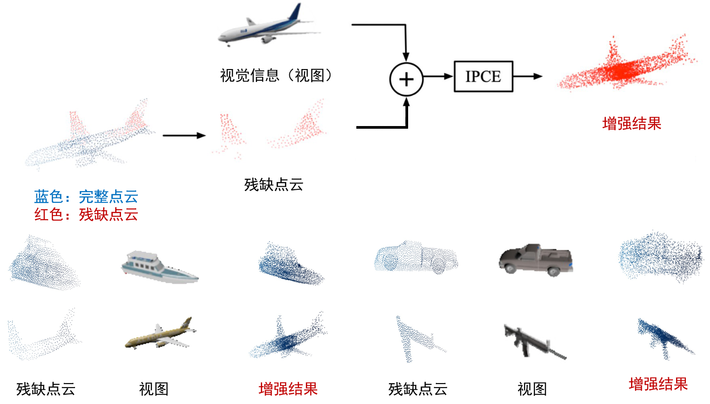
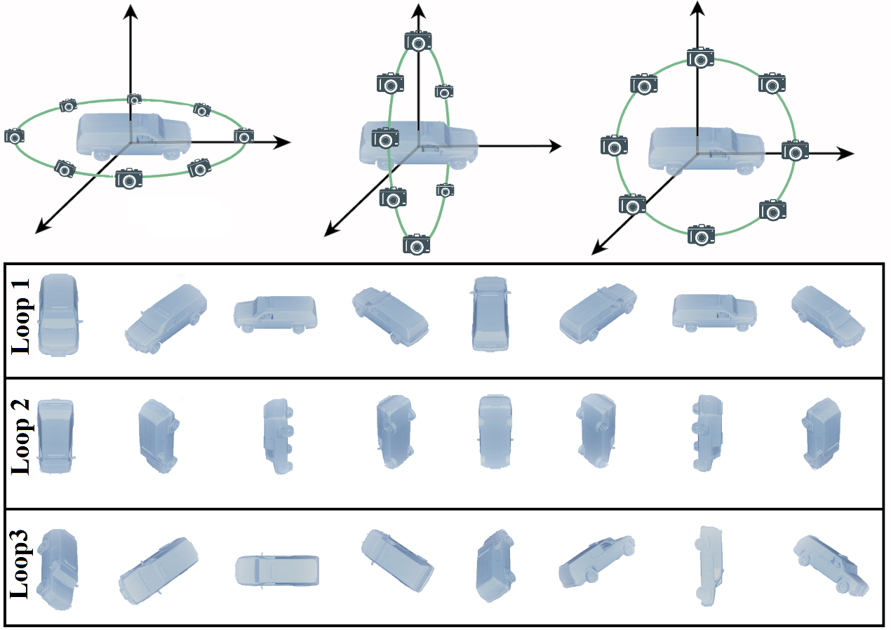
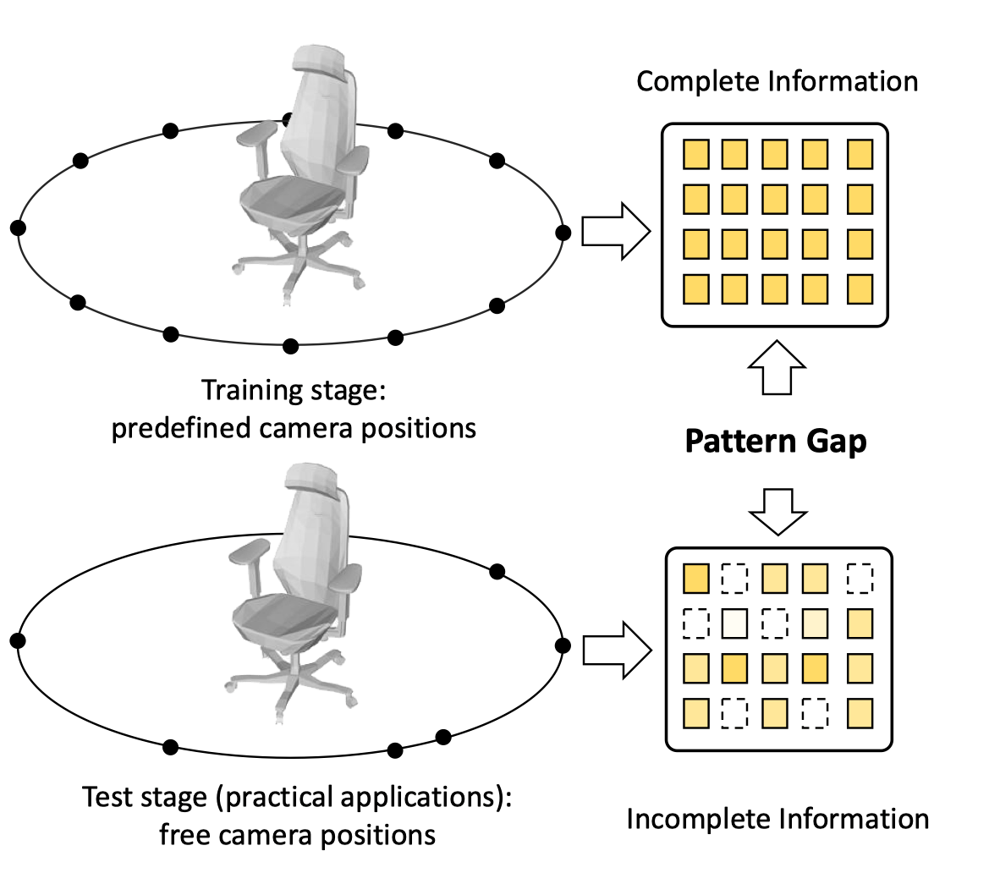
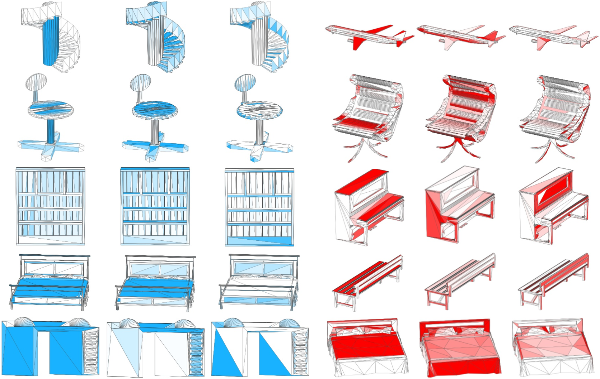
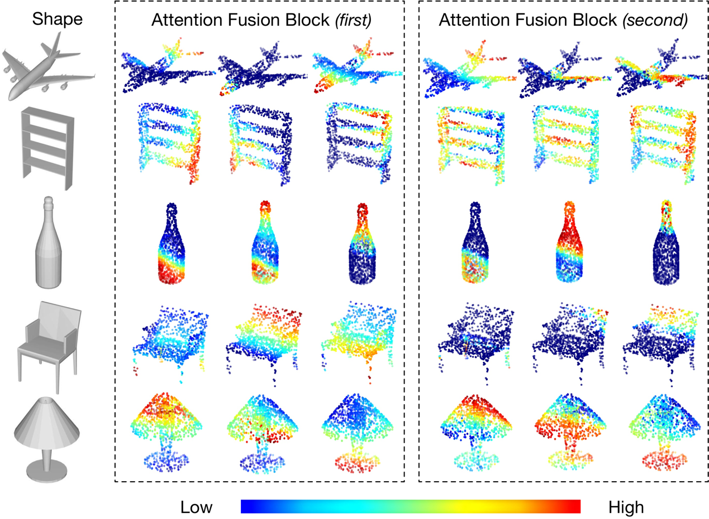
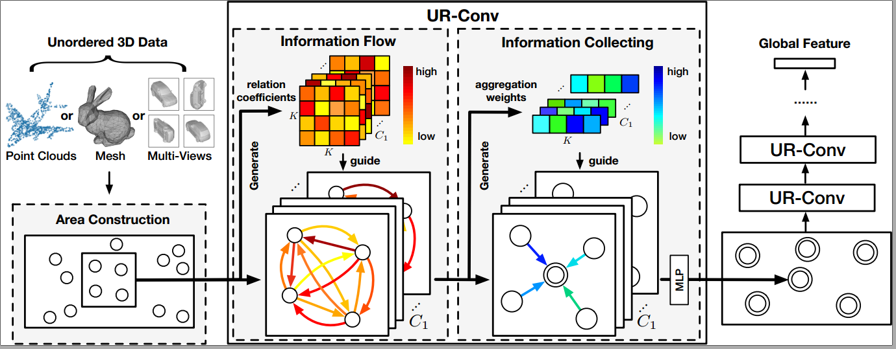
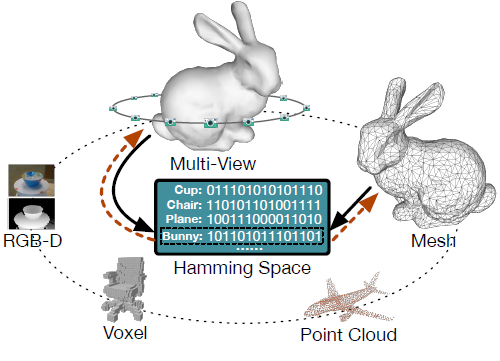

立体视觉 3D Vision¶
立体视觉是双眼观察景物能分辨物体远近形态的感觉。立体视觉是计算机视觉领域的一个重要课题，它的目的在于重构场景的三维几何信息。立体视觉的研究具有重要的应用价值，其应用包括移动机器人的自主导航系统，航空及遥感测量，工业自动化系统等。立体视觉的基本表示模态包括：多视图或视频、点云、网格、体素。
3D数据生成¶
随着信息时代各行各业对空间数据需求的日益增长，常规的数据获取方式和数据处理模式已经不能满足信息化需要，测量的视觉数据从二维形式向三维形式转换，三维数据获取作为系统的基础成为必不可少的部分。三维数据的采集和模型重建在计算机视觉领域具有广泛且重要的作用，由于采集设备的性能限制，难以在常规场景下获得高质量数据，且不同模态之间均具有各自对三维表示打优势。为此，我们提出了一种跨模态的点云增强框架，即基于视觉信息的点云增强（IPCE）。在我们的框架中，我们设计了一种适用于点云增强的对抗式结构，其中使用单视角视图用作辅助输入。我们利用多阶段嵌入式融合机制，通过将两种模态的高阶特征注入低阶特征并用于后续计算，可以更好地利用低阶特征所表达的几何信息和高阶特征所表达的语义信息。
3D数据生成-1¶
3D数据表示¶
多视角的表示¶
多视图是表征立体对象的有效方法，它既可以是3d 对象的多个投影视图，也可以是真实对象不同角度拍摄得到的照片。这样的数据在现实生活中普遍存在，也是人类视觉系统获取、分析、理解这个三维世界的方式。研究多视图表征，不仅有利于3d对象的识别任务，也将为探索人类大脑是如何理解感知周围环境提供帮助。
以MVCNN为代表的众多基于多视图3D对象识别和检索方法都取得了令人瞩目的性能表现，但是按照MVCNN的设定，他们要求固定的视图采集位置为了提高三维检索任务中的精度并提高模型的通用性，我们提出了基于多环路多视图三维物体表示框架的神经网络模型，该模型首先使用多个正交的环路进行多视图投影得到多组具有强时序关系的试图序列，示意图如上，为三个环路示意。在视图层级中全卷积神经网络被用于视图级粗糙特征抽取，将得到的特征经过环路正则化模块得到了环路区分的视图级特征。在这基础上我们使用长短时记忆神经网络对同一个环路内的视图进行时序建模得到环路级视图特征，然后融合多个环路特征得到全局物体表示。
除了固定视角会产生通用性难题外，也会产生了严重的过拟合问题，针对这一过拟合问题，我们提出了高效的特征增强方法---DropMax，即以一定概率drop掉高响应的特征，使得弱的特征能被学习和强化，使得网络能够应对测试时缺失的特征。
点云的表示¶
点云是用于表示多维点集的数据结构，常用于表示三维数据，在3D点云中，点通常表示物体表面的几何坐标。当一束激光照射到物体表面时，所反射的激光会携带方位、距离等信息。若将激光束按照某种轨迹进行扫描，便会边扫描边记录到反射的激光点信息，由于扫描极为精细，则能够得到大量的激光点，因而就可形成激光点云。
Mesh的表示¶
立体网格作为三维物体的一类重要且有效的数据类型，在计算机视觉和计算机图形学领域得到了广泛的关注和研究。在表示三维物体的任务中，近年来已经有许多基于体素、多视图和点云的三维物体表示方法研究，而基于网格数据的研究却非常缺乏，网格数据是一系列点、边、面的集合，不同元素间连接关系复杂，元素数量不固定且无序，由此带来的复杂性和不规则性都为基于网格数据的学习带来了困难。我们提出了一种名为 MeshNet 的网格神经网络，它能够直接基于网格数据进行三维物体表示。在该方法中，我们提出了以面为单元和分割面特征的方法，通过逐面处理和全局池化的方法解决无序性问题，并将面的特征划分为空间特征和结构特征以细化学习，此外还提出了用于扩大感受区域的网格卷积结构。通过我们的方法，MeshNet 能够解决网格数据的复杂性和不规则性问题，从而进行良好的三维物体表示。我们把该方法应用到了三维物体的分类和检索任务中，实验结果及同其他当前最优方法的对比表明，MeshNet 能够达到令人满意的分类和识别效果，从而表明了其在表示三维物体方面的有效性。
融合表示¶
三维物体的语义理解在计算机视觉和多媒体领域一直收到广泛的研究关注，近年来随着深度学习的广泛应用，各种不同模态下具有不同表现形式的深度模型已达到优秀的性能，视图和点云对三维物体的表示均具有各自的优势，但是很少有人将点云数据和多视图数据联合用于三维表示，我们提出首个点云与视图数据融合的三维立体视觉表征学习算法。同一三维物体可以由一个点云和多视图两种数据类型进行描述，核心思路是融合点云和视图这两种模态数据，我们发现现有的方法在点云局部特征的提取上面表现较好，但是没有考虑到各个局部特征的可辨别能力，不同的局部特征在表征物体时重要程度不同，因此我们引入视图的全局特征与点云的局部特征融合得到注意力掩膜，表征不同局部特征的重要性，然后将注意力掩膜以残差连接的方式对点云特征进行增强。最后，我们将增强后的点云特征和多视图特征融合为两个模态的统一表征。我们取最后的特征进行三维物体的分类识别和检索，并获得了相较于点云和多视图单独模态的性能提升，同时在数据缺失的情况下，我们的模型有助于两种模态之间的互补，展现出了较优的鲁棒性。
除了基本的点云视图融合表示模型外，我们又提出一种点云与视图多模态融合的新型三维立体视觉表征学习算法。对于同一三维物体，通常由一个点云和若干个视图共同描述，核心思路是建模点云与视图之间的关系，并利用其关系进一步组合两个模态的融合方式。首先，我们提出关系得分网络用于学习每个视图的关系分数，不同的视图包含不同的局部特征，因此在融合时与整个点云的关系不同，有些视图更有区分性，而有些视图信息含量少不适合进行融合，我们的关系得分网络学习到不同视图与点云融合时的关系分数，表征其是否适合与点云数据进行融合。然后在不同视图关系分数不同的基础上，我们进一步建立了点云-单视图融合网络和点云-多视图融合网络，点云-单视图融合网络建模一对一的点云-视图关系并进行融合获得特征，点云-多视图融合网络则建模一对多的点云-多视图关系，仅选择关系分数高的视图进行融合活的特征。最终，我们集联两种融合网络得到的特征作为点云和多视图的有效融合的统一表征，送入多层感知器进行分类。我们所提出的模型在三维物体的分类识别和检索等任务上，均取得了较好的性能提高。
面向旋转不变等鲁棒表示¶
3D数据表示是3D视觉中的重要且基本的过程，其在过去几年中萌发了许多深度卷积神经网络 （CNN）方法。我们注意到大多数3D数据，例如点云，网格和视图，都是不规则且无序的。并且3D数据表示在实际应用中还需要保持排列不变性。传统的3D数据表示方法采用经典卷积或池化方法。值得注意的是，经典卷积可以更好地利用网格中表示的数据的空间局部相关性，但在无序数据中可能导致对形状信息和数据顺序的过拟合。池化方法可以聚合局部特征并保持置换不变性，但忽略局部区域中的3D数据之间的相关性。
为了解决这个问题，我们提出了一种无序的关联卷积（UR-Conv）流程图如上其具有信息流动与信息聚集两个步骤，它将类似卷积的操作应用于无序的3D数据，并且对输入数据的顺序不敏感。我们的方法捕获数据之间的局部依赖性，这增强了模型的表示能力和鲁棒性。我们将我们提出的方法应用于3D物体分类和检索任务，并与最先进的方法进行比较。实验结果表明，我们的UR-Conv实现了更好的性能和更好的鲁棒性。
3D对象识别与检索¶
检索，就是在数据库中查找到想要的东西。对于3d对象的检索任务，我们希望输入3d对象，检索到相似的对象。在这个深度学习的时代，深度特征的天下，如何设计和提取方便比较3d对象相似性的特征是我们共同面对的挑战。为此，我们做过许多探索。
随着图像数据的爆炸式增长，许多任务迫切需要高效的大规模图像检索算法。近似最近邻搜索在大规模数据集上平衡检索的耗时和效率，已引起越来越多的关注。端到端的深度学习模型是一种新兴的、具有很高效率的ANN搜索方法，但其精度相较于非哈希方法略有不足。哈希是通过将高维特征描述符嵌入低维度的、能够保持对象相似特性的汉明空间中，以在大规模数据集中进行最近邻搜索的有效方法。然而，现有的使用卷积神经网络学习哈希映射的方法，在探索视图之间的关系和处理三维多模态数据方面，仍然存在挑战，这限制了检索性能的进一步提升，以及制约了哈希方法在三维多模态数据上的推广。我们的工作主要分为两个部分：1.利用多视图哈希方法增强传统深度哈希学习模型；2.利用统一的汉明空间映射实现三维多模态信息融合，以及高效的三维单(跨)模态检索。.利用多视图哈希方法增强传统深度哈希学习模型；2.利用统一的汉明空间映射实现三维多模态信息融合，以及高效的三维单(跨)模态检索。
|
Zhengyue Huang, Zhehui Zhao, Hengguang Zhou,
Xibin Zhao, Yue Gao. |
|
Jianwen Jiang, Di Bao, Ziqiang Chen, Xibin
Zhao, Yue Gao. |
|
Haoxuan You, Yifan Feng, Xibin Zhao, Changqing
Zou, Rongrong Ji, Yue Gao. |
|
Haoxuan You#, Yifan Feng#, Rongrong Ji, Yue
Gao*. |
|
Yifan Feng, Zizhao Zhang, Xibin Zhao, Rongrong
Ji, Yue Gao*. |